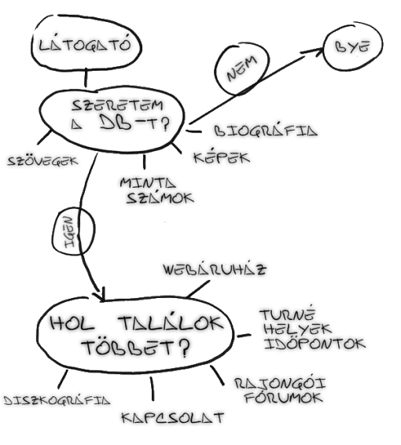
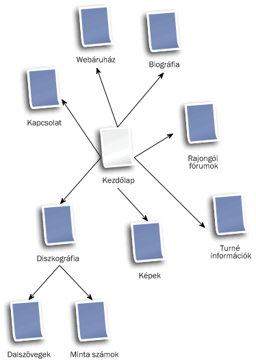
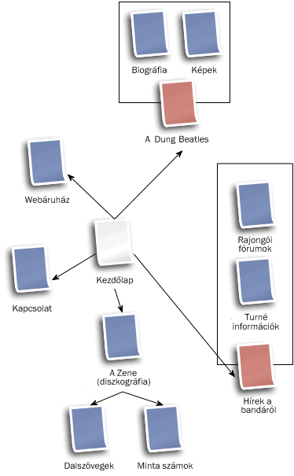
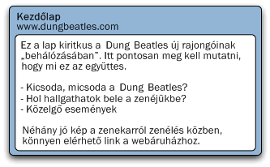

6. Információs Architektúra — egy website tervezése
- Előző leírás — Webes szabványok — szép álom, de mi a valóság?
- Következő leírás — Mi kell egy jó weblaphoz?
- Tartalomjegyzék
Bevezető
Hagyományosan egy website tervezése (vagy bármilyen más projekt) elég kimerítő lehet. Mindenkinek van valamilyen véleménye, hogy egy website-ot hogyan kell felépíteni, és ezek a vélemények gyakran ütköznek egymással. Az első számú célod egy website felépítésénél az kellene legyen, hogy az eredmény legyen hasznos a felhasználók számára. Nem számít, hogy mit mond a főnököd, hogy mit mond a srác az alsó szintről a doktori diplomájával, és az sem számít, hogy te mit gondolsz. A végén úgyis csak annak a csoport embernek a véleménye számít majd, akik számára a weblapot valójában készíted.
Ebben a cikkben egy website tervezésének a korai fázisait nézzük át, amelyre sokszor Információs Architektúra, vagy röviden IA névvel hivatkoznak. Ennek keretében át kell gondolni, hogy ki lesz az új website célközönsége, milyen információk és szolgáltatások kellenek a website-ra, és mindezt hogyan rendezd el, hogy elérhetővé tehesd a látogatóknak. Át kell nézd az összes információhalmazt, amelyet az oldalra szánsz, és el kell döntened, hogy hogyan darabolhatod szét ezeket, valamint hogy a darabok hogyan viszonyulnak majd egymáshoz. Ebben a bejegyzésben a következő témákról lesz szó:
Tervezd meg előre a készülő weboldalt
Lehetséges, hogy találkozni fogsz olyan webes projektekkel, amelyeknél azonnal fejest ugorhatsz a kódolásba, de ezek leginkább csak kivételek. A továbbiakban megnézünk egy képzeletbeli bandát, a „Dung Beatles”-t, és megpróbálunk segíteni nekik a készülő website-juk tervezésében. Beszélünk a banda tagjaival, és megtudjuk tőlünk, hogy milyen céljaik vannak a weblappal, mit szeretnének rajta látni. Ezután nekilátunk, és kidolgozunk egy struktúrát az együttestől kapott információk alapján.
A „Dung Beatles” együttes
A Dung Beatles együttesnek van egy kis gondja. Ők a legismertebb Beatles emlékzenekar a kanadai Saskatchewan tartományban, de fel kell építeniük egy profilt a közelgő észak-amerikai turnéjukra ezen a nyáron. Már lefoglaltak több helyet Kanadában és az Egyesült Államokban is, de a szülővárosukon kívül még nem igazán ismertek. Bárcsak lenne valami egyszerű technikai megoldás, amellyel a lehető legtöbb Beatles rajongót elérhetnék viszonylag kevés pénzért.
A Dung Beatles szerencséjére van egy olyan dolog, hogy világháló, így gyorsan el is döntik, hogy a problémájukra a legegyszerűbb megoldás jelenleg egy website készítése lenne. Szükségük van egy helyre, ahol reklámozhatják a turné időpontjait, rajongói csapatokat építhetnek fel különböző városokban, és növelhetik a banda hírnevét. Te most átnézed velük együtt az eddigi ötleteiket, és megpróbálsz egy vázlatot készíteni a weblapjukhoz az eddigi információk alapján.
Összehozol a bandával egy találkozót, amelyen megbeszélhetitek a részleteket az igényeikről, valamint megegyezhettek a határidőkben és a költségekben. A beszélgetést azzal kezded, hogy azt javasolod nekik, beszéljenek egy keveset a céljaikról és a terveikről a website-tal kapcsolatban, hogy világos legyen, mit szeretnének vele kezdeni. Milyen reményeket fűznek valójában az online jelenlétükhöz?
A banda ekkor elkezd beszélni a közelgő turnéjukról, hogy szeretnék eljuttatni a turné hírét a Beatles rajongóknak a tervezett helyszíneken. Most február van, és ők öt hónap múlva tervezik elindítani a turnéjukat.
Álljunk itt meg egy pillanatra! Egy website önmagában nem fogja felépíteni a forgalmat, és nem fogja önmagát reklámozni. A beszélgetésből azt a következtetést vonod le, hogy a website egyik fő célja a rajongók online összefogása lenne, egy olyan hely biztosítása, ahol nyomon követhetik a legújabb híreket, újdonságokat, valamint a turnék és találkozók időpontjait és helyeit. A rajongókon keresztül (szóbeszéd útján), és valamilyen reklámfelület által az új embereket ide lehetne irányítani, ahol letölthetnének néhány minta számot, láthatnának képeket az együttesről, és megtudhatják, hogy hol és mikor nézhetik meg őket élőben.
Raul McCoffee, az együttes frontembere rámutat arra, hogy jó lenne, ha egy kis extra bevételre tehetnének szert a turné során néhány CD vagy egyéb cuccok eladásával. Ezután összehozod a bandát, és rajzolsz nekik egy gyors vázlatot arról, hogy a lehetséges látogatók mit akarhatnak, amikor majd meglátogatják a weblapot. Ez még csak az ötletek durva összefoglalása, a struktúra egyelőre nincs igazán megtervezve.
Két nagy csoportra oszthatod azokat az embereket, akik meglátogatják a website-ot: azokra, akik már ismerik és szeretik az együttest (a rajongók), és a többiekre, akik még bizonytalanok. A két csoportot másképpen kell kiszolgálnod: a lehetséges rajongóknak „el kell adnod” az együttest, míg a régi rajongóknak továbbra is fenn kell tartani az érdeklődését. Milyen információk érdekelhetik ezt a két csoportot? Az 1. ábrán ezt rajzoltuk le: ez tipikusan egy olyan vázlat, amelyet a készülő website jelenlegi stádiumában készíthetsz. Később ennek alapján tervezheted meg, hogy milyen lapokra lesz szükség a website-on, és ezek hogyan kapcsolódnak majd egymáshoz.
1. ábra: Vázlat arról, hogy mire lehet kíváncsi egy látogató.
Ezután megegyeztek a költségekben, és hogy a website elindul egy hónapon belül. Megígéred, hogy néhány nap múlva újra felkeresed a bandát, és megmutatod, hogy milyen irányban indultál el.
És most? Rajzoljunk oldaltérképet
Sokan a következő lépésben összedobnak egy egyszerű oldaltérképet, ez úgy néz ki, mint egy organigram (szervezeti diagram). Ezen a diagramon általában csak egyszerű képek vannak, amelyek az egyes oldalak nevét jelölik, valamint hogy hogyan illeszkednek be a website szerkezetébe. Én személy szerint egy kicsivel több részletet adok meg rajta, és röviden beírom azt is, hogy mire szolgálnak az egyes lapok. Például az egyik lap neve „Kezdőlap”, de mi ez a kezdőlap valójában? Vajon csak egy giccses „Üdvözlünk a weblapunkon” szöveg van rajta (borzalom!), vagy egy dinamikus oldal a legújabb hírekkel és mutatós képekkel? Gondolkodj el néhány percig azon, hogy a fenti vázlat alapján milyen oldalaid lehetnek, és ezek nagyjából mit fognak tartalmazni. Próbáld meg elkészíteni most a saját oldaltérképedet, mielőtt tovább olvasod ezt a leírást.
És most kezdjük az alapokkal: készítsünk el egy ilyen oldaltérképet. A 2. ábrán az én próbálkozásomat láthatod az ötletelések után. Ilyen lett végül az én oldaltérképem:
2. ábra: Az oldal felépítésének első tervezete. Olvasd el a 2. ábra leírását
Ebben most már benne van az összes oldal, amire szükségünk lesz, de ezek még nincsenek igazán csoportosítva, csak egyszerűen össze vannak dobálva az oldalak. Ezért a következő lépésben megpróbálom az összetartozó oldalakat valamivel jobban csoportosítani. A 3. ábrán láthatod, hogy mire jutottam:
3. ábra: Az oldal felépítésének második tervezete. Olvasd el a 3. ábra leírását
Több dolgot is módosítottam a második tervezetben. Az új „Hírek a bandáról” oldal lehetőséget ad az együttes számára, hogy bármilyen információt megoszthassanak a rajongóikkal. Ha már a nyári turné végetér, és a „Turné információk” oldal elavulttá válik, akkor is írhatnak még ide új dolgokat. Egy egyszerű blog formátum használatával a rajongók itt kommentezhetnek is a különböző posztoknál, és ez segít egy online közösség felépítésében a Dung Beatles számára is. A hírek és a turné információk valószínűleg összemosódnak, így ezeket egy csoportba tettem. Másrészt a „Hírek” szó a legtöbb ember számára sokkal egyértelműbb, és hamarabb felfedezik az oldalon, amikor információt keresnek.
Az új „A Dung Beatles” oldal összefogja a banda tagjainak életrajzát és a róluk készült fényképeket. Ezen az úton jó lehetőség adódik a tagok életrajzának elhelyezésére. Az együttes neve itt utal arra, hogy ezen a lapon további információkat találhat az érdeklődő a bandáról.
Végül a „Diszkográfia” egy eléggé technikai jellegű kifejezés. Valószínűleg kevesebben értenék meg ezt, mint „A Zene” kifejezést. Ezen az oldalon később további információkat is el lehet helyezni, például az inspirációk forrása, az egyes számok készítésének története, stb... érted az ötletet. Azt hiszem, az oldaltérképpel így végeztünk is. A következőkben még beszélünk egy keveset a lapok elnevezéséről, és aztán tovább részletezzük az egyes oldalak tartalmát.
Nevezd el az oldalakat
A lapok neveinek kiválasztása a legnehezebb döntéseid között lehet egy website tervezése alatt. Ez nem csak a látogatók szemszögéből fontos, hogy könnyen megtalálhassák a website-on az őket érdeklő információkat, hanem ez befolyásolja azt is, hogy milyen könnyen találják meg az oldalad a különböző keresők (a kurzus alatt többféle keresőoptimalizációs módszerrel is találkozni fogsz).
A keresőmotorok alapjában véve a weblap szövege, az adott lap URL-je és az oldalra mutató hivatkozások szövege alapján döntik el, hogy egy oldal „mennyire fontos”. Ha az oldalaidnak egy ésszerű nevet és egy értelmes URL-t adsz, akkor az arra készteti az embereket, hogy az oldalra mutató hivatkozásoknak is egy értelmes nevet adjanak.
Itt egy példa. Tegyük fel, hogy van egy autós céged, és van egy „Speedster” nevű autómodelletek. Készítettek egy weboldalt, amelyben az autóitokat reklámozzátok, és az egyik oldalon a felsoroljátok az autó jellemzőit. Hogyan fogod elnevezni ezt a lapot? „Jellemzők”, „Legfontosabb tulajdonságok”, „A Speedster jellemzői” vagy „Csengők és sípok”? Én a „A Speedster jellemzői” változatot javasolnám, mivel pontosan lefedi a lap tartalmát, ez jelenik majd meg az ablak fejlécében, és feltűnő (vagyis könnyen indexelhető) lesz a keresőrobotok számára is. Ráadásul felhasználhatod az URL-ben is (például www.autosceg.hu/speedster/speedster-jellemzok/).
Ne felejtsd el a részleteket
Ezen a ponton nem kell még mindent kitalálnod, de legalább egy rövid leírást érdemes készítened mindegyik oldalhoz, amelyben leírhatod, hogy mire kell majd figyelni az oldal készítésekor. Ha megvan a site struktúrája, számozd meg a lapokat, és írj egy rövid leírást mindegyikhez, hasonlóan ahhoz, mint amit a 4. ábrán láthatsz (a cikk végén a tesztkérdések között az lesz az egyik feladat, hogy készítsd el a többi oldal leírását).
4. ábra: A Kezdőlap részletesebb leírása. Olvasd el a 4. ábra leírását
Ezen a ponton még bőven elég ennyi információ a lapokról. Nem szükséges, hogy részletesen leírd a lap funkcionalitását, a technológiát, amellyel elkészíted, vagy a megjelenés részleteit. Csak azt írd le néhány egyszerű szóval, ami az oldallal kapcsolatban most a fejedben van. A cél itt az, hogy az elképzeléseidet meg tudd mutatni a kliensnek, és hogy biztos lehess benne, hogy mindent átgondoltál az oldalakkal kapcsolatban.
Nem ritka az sem, hogy ezen a ponton észreveszed, hogy már túl sok oldalt terveztél a site-ra, és nem tudsz mindegyikhez tartalmat rendelni. Meg lehet őszülni a lapok hierarchiájának készítése közben. Például ha a banda minden tagja szeretne írni magáról néhány mondatot, akkor nem kell minden taghoz külön lapot csinálni, elég, ha egyetlen lapra felteszed mindet.
Összefoglaló
Ebben a cikkben megnéztünk egy website indulásának az előzményeit, és hogy hogyan kezdhetünk el egy új site struktúráján gondolkodni. A következő leírásban lemegyünk a lapok szintjére, és megnézzük, hogy mitől lesznek jók a weblapok: milyen funkciókat tegyünk bele, és hová tegyük őket. A 8-as, 9-es és 10-es leírások a lap vizuális designjával fognak foglalkozni. Szóval az egész 3 logikus lépésből áll (mindegyik lépésben mutasd meg az elképzelésedet a kliensnek, hogy biztosan elégedett legyen vele):
- Először döntsd el, hogy milyen tartalom lesz a website-on, majd döntsd el, hogy milyen szerkezetben osztod szét a lapok között a tartalmat.
- Ezután döntsd el, milyen funkcionalitást szeretnél elérhetővé tenni a website-on.
- A kódolás elkezdése előtt az utolsó lépés, hogy megtervezed a vizuális megjelenését a website-nak: az elrendezést, a színsémákat, stb.
Tesztkérdések
- Nézd meg újra az 1. ábrát, és készíts el egy hasonló vázlatot egy autóról szóló website-hoz (válassz bármilyen jelenlegi vagy képzeletbeli autót).
- Mit szeretnének megtudni a látogatók?
- Van bármi olyasmi a létező autós website-okon, amit elengedhetetlennek tartasz? Vagy amit komolytalannak?
- Vedd elő az ötleteidet, és rendezd el az információkat. Milyen csoportosításnak van értelme?
- Egy másik hasznos foglalkozás egy website tervezésekor az, hogy megnézed a konkurenciát. Keress rá egy együttes honlapjára (bónuszhoz keress egy elismert zenekart), és nézd meg, hogy mit nyújt a weblapjuk. Van rajta olyasmi, amit mi kifefelejtettünk?
- Nézd meg a 4. ábrát, és készíts hasonló leírásokat a többi laphoz, amelyeket a website-hoz terveztünk.
- Előző leírás — Webes szabványok — szép álom, de mi a valóság?
- Következő leírás — Mi kell egy jó weblaphoz?
- Tartalomjegyzék
A szerzőről

Jonathan Lane az Industry Interactive vezetője, amely webfejlesztéssel, valamint webalkalmazások fejlesztésével foglalkozó cég Kanadában. A webfejlesztéssel a Lethbridge Curriculum Re-Development Center Egyetemen kezdett foglalkozni sok évvel ezelőtt mint webes projekt koordinátor.
A Flyingtroll oldalon blogol, és jelenleg a Mailmanagr-t fejleszti, ami egy email interfész a Basecamp projekt management alkalmazáshoz.
This article is licensed under a Creative Commons Attribution, Non Commercial - Share Alike 2.5 license.
Comments
The forum archive of this article is still available on My Opera.
No new comments accepted.